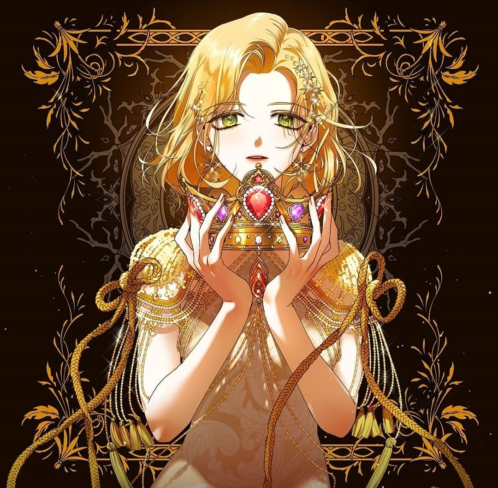
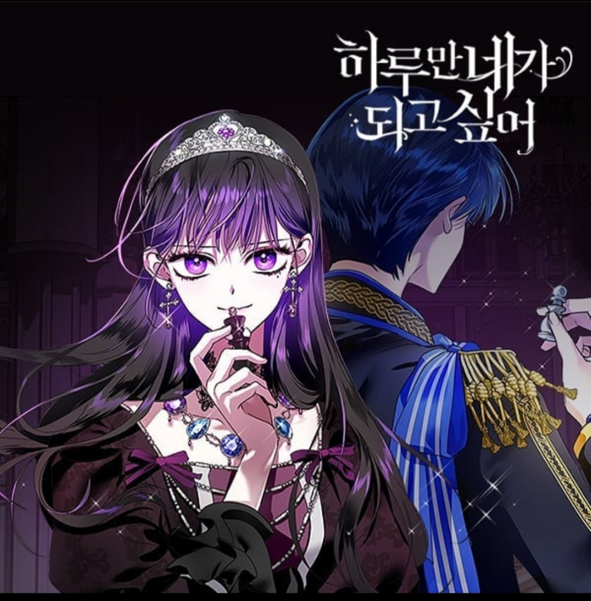
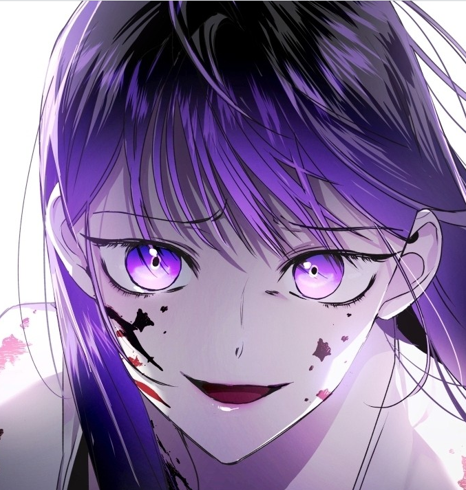
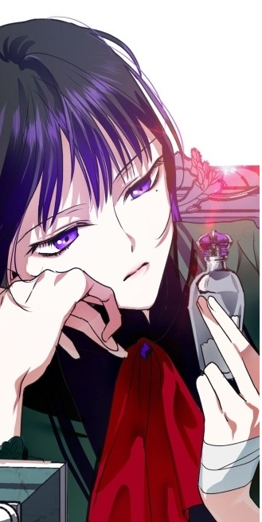
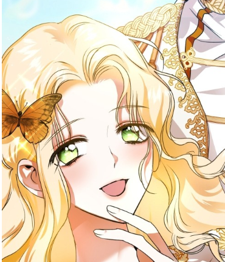
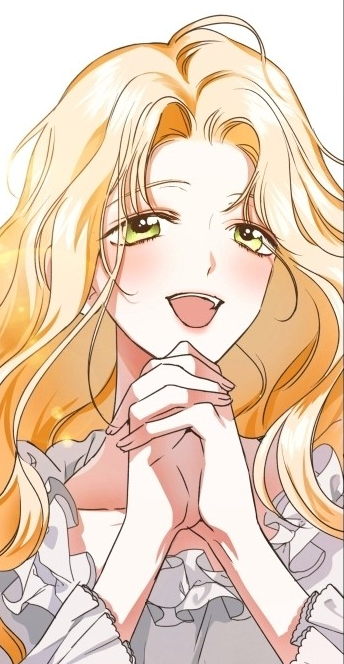
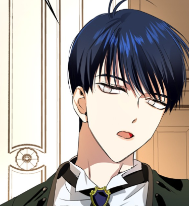
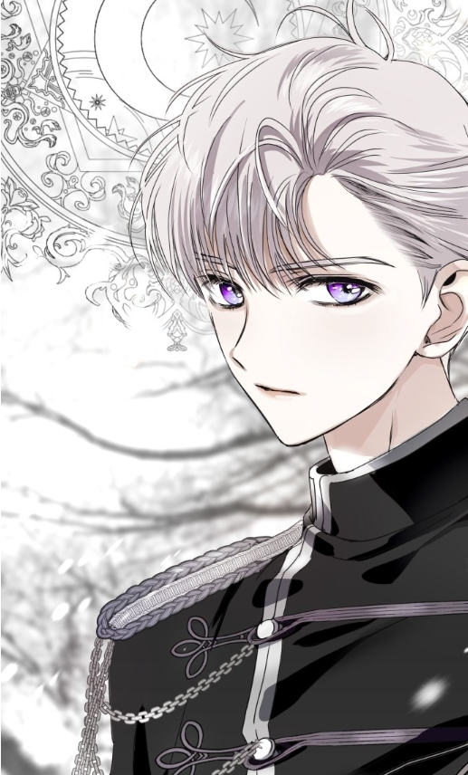

| 하루만 네가 되고 싶어 | |
 2부 썸네일.출처 | |
| 작가 | 삼 인스타그램 |
| 장르 | 스토리, 판타지, 드라마 |
| 연재 요일 | 화요일 |
| 연재 기간 | 2020. 01. 06 ~ |
| 플랫폼 | 네이버 웹툰 바로가기 |
| 심의 등급 | 전체 이용가 |
개요
|  |
| 1부 썸네일 |
'완벽한 인생이었다, 그 애가 나타나기 전까지는'
반전에 반전을 거듭하는 치밀한 궁중 서스펜스
하루만 네가 되고 싶어는 2019년 네이버웹툰 최강자전, 그리고 베스트 도전을 거쳐 현재 정식 연재 중인 웹툰이다.
줄거리
에페란토 제국의 제1계승자인 '이아로스 오르나 에페란토'는 많은 국민들의 축복 속에서 폴리 백작 가의 외동딸 '프시케 폴리'와 더할 나위 없이 행복한 약혼식을 올린다. 그런 둘의 모습을 바라보며 증오 가득한 표정을 짓는 인물이 있었으니, 그는 바로 황태자비 경합에서 이겼음에도 불구하고 약혼 상대로 간택받지 못한 벨리아르 가의 장녀 '메데이아 벨리아르' 였다. 메데이아는 벨리아르 공작가문에서 황족을 시해하려 했다는 혐의를 받아 황태자비가 되지 못한 사정이 있었다. 게다가 원래도 몸이 약했던 어머니는 결국 수감생활로 인해 병세가 약화되기 까지 하고 만다. 이 모든 게 '프시케'가 나타난 다음 일어난 일이라고 여긴 메데이아의 적개심은 커져만 갔다. 한편, 메데이아의 심정은 까맣게 모른 채 그저 순수한 마음으로 그에게 다가가고자 선물을 고른 프시케는 메데이아에게 보내고, 이아로스의 조언대로 구매한 선물을 받은 메데이아는 하필 '반지'를 보낸 프시케에게 격노한다. 그렇게 메데이아 역시 답례로 프시케에게 함께 티타임을 가질 것을 제안하게 되는데… 과연 두 사람의 운명은 어떻게 될 것인가?
특징
등장인물
메데이아 벨리아르
|  |  |
메데이아 벨리아르 북미 : Medea Solon | |
벨리아르 가의 장녀. 자매나 형제가 있긴 한 듯 한데 존재감이 없어 외동인 줄 알았다. 자비없고 살벌한 미소를 지을 줄 아는 캐릭터.
이름의 유래는 그리스 신화의 마인 메데이아.
프시케 폴리
|  |  |
프시케 폴리 북미 : Psyche Callista | |
폴리 백작 가의 외동딸. 황태자비 경합에서 패배했으나 이아로스의 총애 덕분인지 메데이아를 제치고 황태자비로 간택을 받는다.
이름의 유래는 그리스 신화의 사랑의 남신 에로스의 연인 프시케.
이아로스 오르나 에페란토
|  | |
이아로스 오르나 에페란토 북미 : Eros Orna Vasilious | |
에페란토 제국의 제1계승자. 이름의 유래는 그리스 신화에서 메데이아를 배신한 이아손과 사랑의 남신 에로스.
헬리오 트로피움
 |  |
헬리오 트로피움 북미 : Helio Niccolo | |
설정 및 세계관
- 남왕의 영애와 공녀의 영혼이 서로 뒤바뀐다면?
성격도 야망도 전혀 다른 두 여자의 영혼이 어느 날, 운명처럼 뒤바뀌면서 서로가 서로를 연기하며 살아가게 된다!